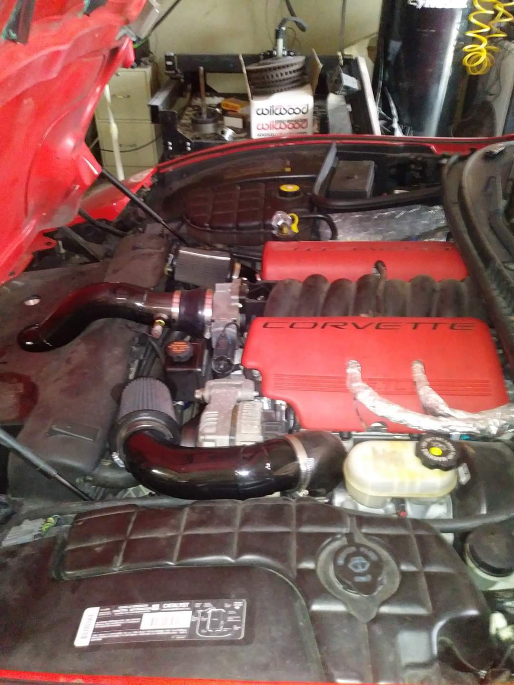

James Allen
Fulltime Student and Military Retiree
Objectives:
Develop software and firmware for myself and #web3 projects to include gaming and finance applications. Develop and lead a project startup that generates a minimum of 2 million annual revenue. Utilize my experience and skills as an Ironworker, Carwash Manager, Security Guard, and Military Service to contribute to the growth and success of my company.
Featured Projects
View selected projects below. More information can be found at JimbosCustomRacefab.com.
Race Fabrication
Custom Twin Turbo kit for a 2001 Corvette Z06. Consists of a built 5.3 LM4 engine, custom full system, C6 Z06 Drivetrain, and a custom built Turbo kit. All work performed by me.
View project pageWork Experience
During my 27 total years in the workforce experience, I have worked in the the Construction Industry as an Ironworker, the Service Industry as a Carwash Manager, the Medical industry as a Security Guard, the Military and a Senior NonCommissioned Officer.
Security Guard
Securitas
January 1996 - June 1998
Monitored and patrolled the premises to prevent theft, vandalism, and unauthorized access to the Dental Facility and restricted areas. Responded to alarms and emergenicies, and reported incidents to the appropriate authorities.
Skills utilized:
- Attention to detail
- Observation
- Time Management
Carwash Manager
Terrible Herbst Oil Company
June 1998 - June 2000
Managed the day to day operations of the Carwash ensuring efficient and effective use of resources. Maintained inventory and ordered supplies as necessary. Provided excellent customer service and addressed and customer concerns or complaints. Trained and supervised staff members to ensure quality service and adherence to company policies and procedures. Managed personnel schedules and wages for employees.
Skills utilized:
- Data Entry
- Scheduling
- Machine Maintenance
- Time Management
- Interpersonal Leadership Traits
Ironworker
Justeel Reinforcing
July 2000 - July 2021
Installed, reinforced, and dismantled iron and steel structures for buildings and bridges. Operated heavy machinery and power tools to construct and install metal reinforcement structures. Assisted with the fabrication and welding of structural steel components. Followed all safety protocols
Skills utilized:
- Welding
- Metal Forming
- Reading Engineering Plans
- Time Management
Military Career
U.S.Army
July 2001 - November 2022
Served for 21 years in various positions, including Tank Commander, Senior Instructor, Instructor Trainer, Recruiter, and Inspector General. Trained and mentored soldiers in combat tactics, weapons handling, and first aid. Conducted inspections and investigations to ensure compliance with regulations and standards. Demonstrated strong leadership skills in challenging and dynamic environments.
Skills utilized:
- Regulatory Expertise
- Teaching, Mentoring and Ficilitating
- Interpersonal Leadership Traits
- Extreme Adaptability
- Time Management
Education
Quartz Hill High School - Quartz Hill
High School Graduate, 1993-1997
Art Graduate